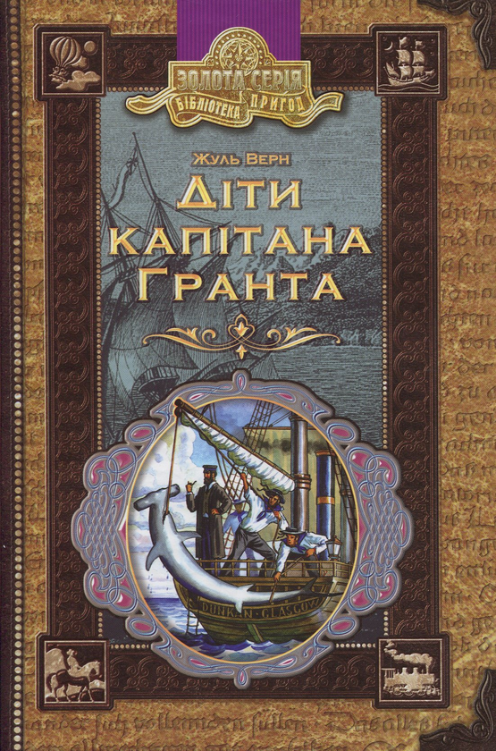

Моя улюблена книга
Назва книги :
Діти капітана Гранта
Автор :
Жуль Верн
Жанр :
Пригодницький роман
Рік першого видання :
1865-1867
Хрипко Максим Михайлович
Сміливий шотландець — капітан Грант — вирушає в подорож, поставивши собі за мету дослідити острови Тихого океану. Коли його корабель «Британія» потрапляє в біду, не лишається нічого іншого як покластись на долю і морські хвилі. Він пише записку із закликом допомоги на трьох мовах (англійською, французькою та німецькою) і кидає її у воду. Пляшка із запискою про місцезнаходження капітана Гранта випадково потрапляє до його співвітчизника лорда Гленарвана. Вода сильно зіпсувала документи, однак вдалося розібрати, що капітан Грант і члени його екіпажу зазнали катастрофи на 37°11' південної широти. Довготу ж визначити не вдалося.
Короткий опис...

Зміст